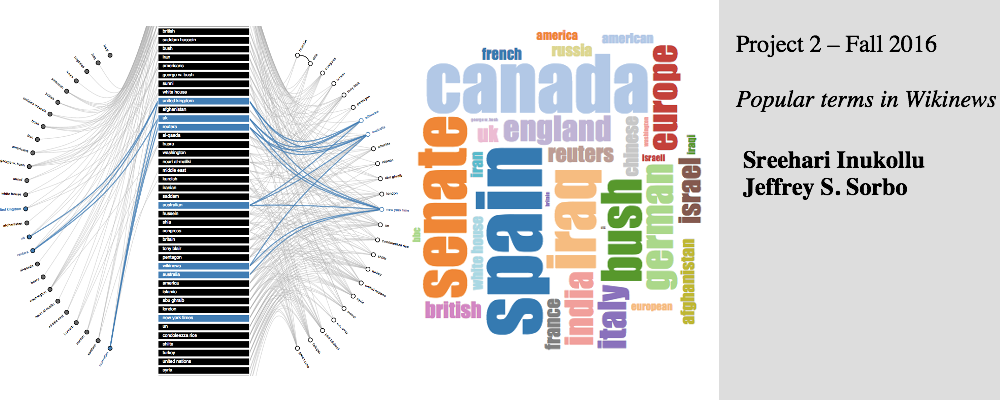
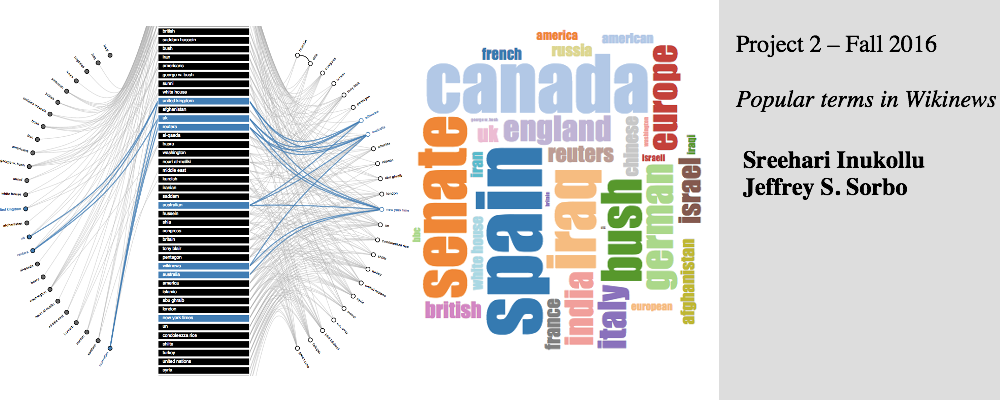
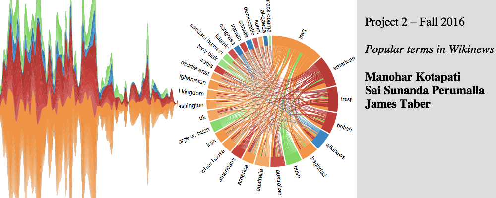
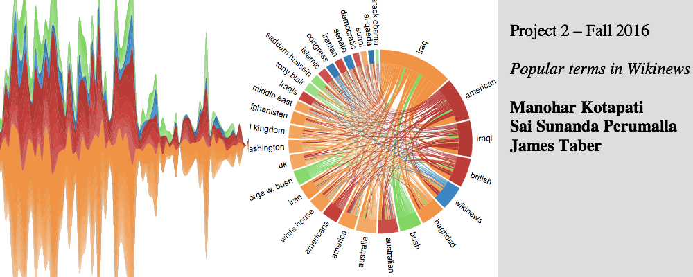

Announcements:
-
Jan 15: Each student is required to create an account on the Piazza: http://piazza.com/ttu/spring2019/cs4331cs5331
-
Jan 14: Every student (include distant students) needs to send the following information to Huyen.Nguyen@ttu.edu:
- Your full name
- Your photo (not required)
- Your program (Phd, Master, and undergraduate)
- Nickname (to be appeared on the grade sheet)
Other Books you may want to look at
- Visual Display of Quantitative
Information, 2nd ed by Edward Tufte
- Envisioning Information by Edward
Tufte
- Visual Explanations - Images and
Quantities, Evidence and Narrative by Edward Tufte
- Beautiful Evidence by Edward Tufte
- Information Visualization,
Perception for Design 2nd ed: by Colin Ware
- Show Me the Numbers: Designing
Tables and Graphs to Enlighten by Stephen Few
- Information Graphics - a
Comprehensive Illustrated Reference by Robert Harris
- Visualization Handbook - Hansen
and Johnson eds
- Understanding place - GIS mapping
across the curriculum by Sinton and Lund
- UIC's
proxy
for

 

 
